Rayonnements ionisants et non ionisants
Le rayonnement se divise en ionisant (alpha, bêta, gamma, X, neutrons) et non ionisant (UV, visible, IR, micro-ondes, RF). Les ionisants peuvent altérer l'ADN et imposent le principe ALARA. Au Canada, les limites pour la population sont de 1 mSv/an et de 50 mSv/an pour les travailleurs du secteur nucléaire. En mine, le radon et les UV de soudage sont les expositions les plus fréquentes.
Table des matières
- Ionisant vs non ionisant
- Rayonnement ionisant
- Effets sur la santé
- Réglementation et limites
- Principe ALARA et radioprotection
- Rayonnement non ionisant
- Radon
- Application terrain
- Ressources
Ionisant vs non ionisant
Le spectre des rayonnements distingue les énergies suffisantes pour ioniser des atomes (>= 12,4 eV) de celles qui ne le sont pas.
{kind=link}
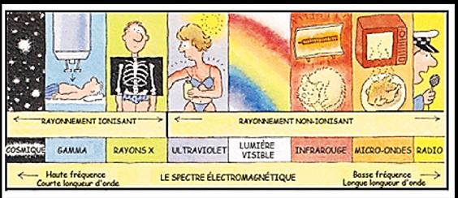
Toucher l'image pour l'agrandirRayonnement ionisant : énergie suffisante pour arracher des électrons aux atomes.
Rayonnement non ionisant : énergie insuffisante pour ioniser (UV, visible, IR, micro-ondes, RF, ELF).
Rayonnement ionisant
Les isotopes d'un même élément se distinguent par leur nombre de neutrons.
{kind=link}
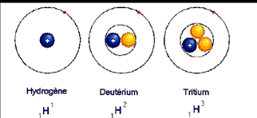
Toucher l'image pour l'agrandir| Type | Pénétration | Blocage | Exemple |
|---|---|---|---|
| Alpha | Quelques cm dans l'air, ne traverse pas l'épiderme | Feuille de papier | Am-241, Pu-238, radon |
| Bêta | Quelques mètres dans tissus, brûlures cutanées | 3 mm de métal | Co-60, tritium |
| Gamma | Très pénétrant | 1 m de béton, plomb | Co-60, Cs-137, I-131 |
| Rayons X | Très pénétrant | Plomb, béton | Imagerie médicale |
| Neutrons | Fission nucléaire | Eau, paraffine | Réacteurs |
{kind=link}
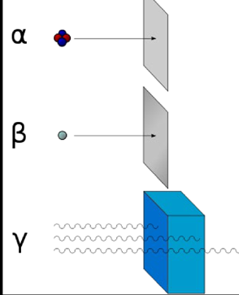
Toucher l'image pour l'agrandirLa pénétration dans la peau dépend du type de rayonnement.
{kind=link}
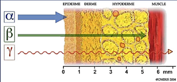
Toucher l'image pour l'agrandirL'effet biologique principal est l'altération ou la cassure de l'ADN. Voir Cancérogénicité.
{kind=link}
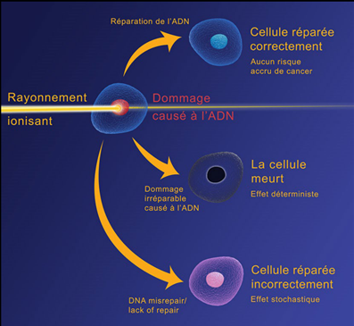
Toucher l'image pour l'agrandirSources d'exposition naturelles et artificielles.
{kind=link}
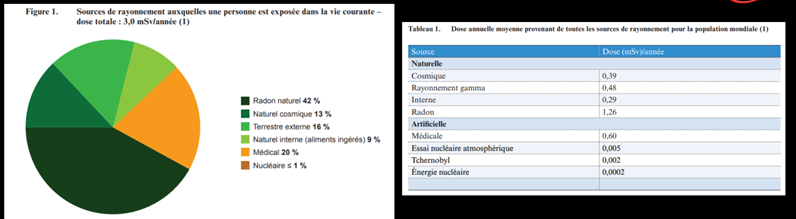
Toucher l'image pour l'agrandirPériode radioactive (demi-vie) : temps pour que l'activité diminue de moitié. Dépend de l'isotope, pas de la quantité.
{kind=link}
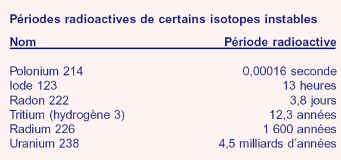
Toucher l'image pour l'agrandirTypes de contact
- Exposition externe (cesse à la distance).
- Contamination externe (sur la peau).
- Contamination interne (inhalation, ingestion) : la plus grave pour les alpha. Voir ADME, cheminement des contaminants dans l'organisme.
Effets sur la santé
Court terme (déterministes, doses élevées)
- Brûlures radiologiques.
- Syndrome d'irradiation aiguë.
- Effets prévisibles selon la dose.
Long terme (stochastiques, probabilistes)
- Cancers, voir Cancérogénicité.
- Mutations génétiques.
- Effets sur le fœtus (anomalies, morts in utero, retards).
Réglementation et limites
Limites de dose efficace au Canada (Règlement sur la radioprotection, CCSN).
{kind=link}
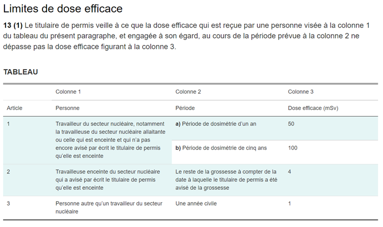
Toucher l'image pour l'agrandir| Catégorie | Dose efficace |
|---|---|
| Population générale | 1 mSv/an |
| Travailleur secteur nucléaire | 50 mSv/an, max 100 mSv sur 5 ans |
| Travailleuse enceinte | 4 mSv (durée grossesse) |
Limites de dose équivalente : cristallin, peau, extrémités.
Au Québec, le RSST aborde les rayonnements ionisants et renvoie en grande partie au cadre fédéral (CCSN).
{kind=link}
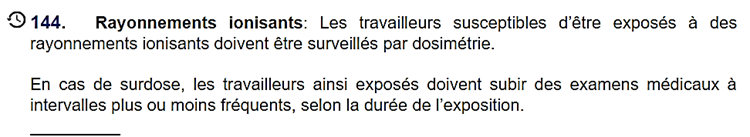
Toucher l'image pour l'agrandirPrincipe ALARA et radioprotection
ALARA (As Low As Reasonably Achievable) : maintenir les doses aussi basses que raisonnablement possible, même si les limites sont respectées. Cohérent avec la Hiérarchie des moyens de prévention.
Cinq leviers de protection
- Élimination de la source.
- Distance : exposition diminue avec le carré de la distance.
- Blindage : épaisseur selon le type de rayonnement.
- Temps : limiter la durée d'exposition.
- Hygiène : éviter contamination, tenue des lieux.
Instruments
- Compteur Geiger-Müller : détection.
- Dosimètre thermoluminescent (TLD) : enregistre la dose cumulée.
- Test par frottis : vérifier l'intégrité du blindage (poussières).
Rayonnement non ionisant
Le spectre non ionisant s'étend des UV aux radiofréquences.
{kind=link}
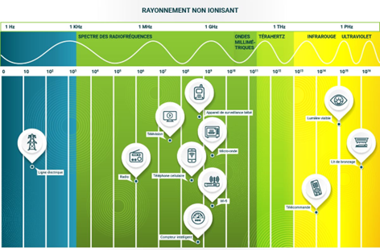
Toucher l'image pour l'agrandir| Type | Longueur d'onde | Effets |
|---|---|---|
| UV-A | 400-315 nm | Bronzage, vieillissement, rôle dans cancers cutanés |
| UV-B | 315-280 nm | Coups de soleil, cancers, conjonctivite |
| UV-C | 280-100 nm | Très dangereux, stérilisation, soudage |
| Visible | 382-780 nm | Lésions rétiniennes, lumière bleue |
| IR-A/B/C | 780 nm - 10000 nm | Brûlures, cataractes |
| Micro-ondes, RF | mm à m | Effets thermiques |
Effets oculaires et cutanés des rayonnements optiques.
{kind=link}
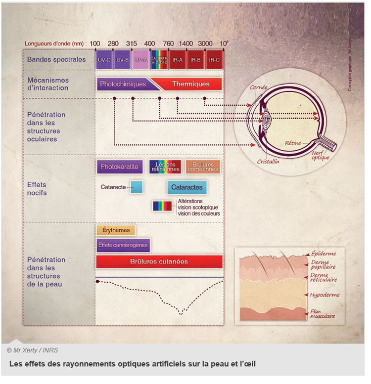
Toucher l'image pour l'agrandirLaser : risques optiques (rétine) et thermiques (peau).
Sources : soleil, soudage à l'arc (UV/IR), fusion verre/acier, dentisterie, salons de bronzage.
Normes : ACGIH (yeux et peau), CSA pour les lasers.
Radon
- Gaz radioactif issu de la désintégration de l'uranium dans la croûte terrestre.
- Émet des particules alpha.
- 2e cause de cancer du poumon après le tabagisme.
- S'accumule dans les espaces mal ventilés (sous-sols, vides sanitaires, galeries souterraines). Voir Entrer dans un espace clos en sécurité et Qualité de l'air intérieur.
Infiltration typique du radon dans les bâtiments.
{kind=link}
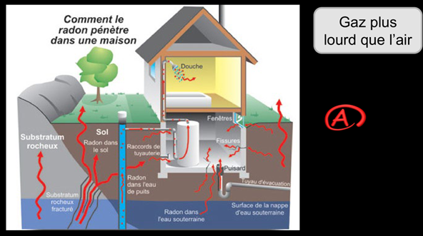
Toucher l'image pour l'agrandirMesure
- À long terme (3 à 12 mois) pour décision corrective.
- À court terme (2-7 jours) uniquement indicatif.
Moyens de contrôle
- Dépressurisation active du sol (méthode la plus fiable, PNCR-C).
- Scellement des voies d'infiltration.
- Augmentation de la ventilation mécanique.
Références : Santé Canada, CCSN, OMS.
Application terrain
Sources de rayonnement en mine
| Source | Type | Particularités |
|---|---|---|
| Radon (mines d'uranium, certaines mines polymétalliques) | Alpha | Limite annuelle CCSN ; surveillance dosimétrique systématique |
| Soudage à l'arc (atelier mécanique) | UV + IR | Écrans, lunettes ad hoc, formation soudeur |
| Mesures par fluorescence X (laboratoire géo) | Rayons X | Procédures CCSN |
| Densimètres nucléaires (test de compactage) | Gamma | Permis CCSN, dosimétrie, stockage sécurisé |
| Soleil (surface) | UV | Crème solaire, vêtements longs, casque large |
| Lasers (mesure topographique, alignement) | Visible | Procédures CSA Z136 |
Particularités minières
- Les mines d'uranium relèvent directement de la CCSN, avec un programme de radioprotection structuré.
- Le radon n'est pas exclusif aux mines d'uranium : il peut être présent dans toute exploitation souterraine selon la géologie.
- Les densimètres nucléaires utilisés en génie civil et en géotechnique exigent un permis et une dosimétrie individuelle.
Ressources
| Document | Type | Source |
|---|---|---|
| Règlement sur la radioprotection | Règlement | CCSN |
| Guide radon | Référence | Santé Canada |
| TLV rayonnements optiques | Référence | ACGIH |
| CSA Z136 (lasers) | Norme | CSA |
Articles wiki connexes
Pages qui pointent ici (12)
- 🎯 Démarrage rapide, conseiller SST Hygiène industrielle
- 🏠 Wiki Hygiène industrielle, mines Hygiène industrielle
- Agresseurs physiques Hygiène industrielle
- Appréciation du risque, méthodes Sécurité industrielle
- art-2-LSST Hygiène industrielle
- Bruit en milieu de travail Hygiène industrielle
- Contrainte thermique Hygiène industrielle
- Environnement de travail Hygiène industrielle
- Espaces clos Sécurité industrielle
- Maladies professionnelles en mine Toxicologie
- Mutagénicité et cancérogénicité Toxicologie
- Qualité de l'air intérieur Hygiène industrielle